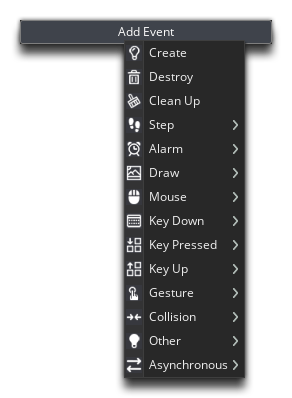
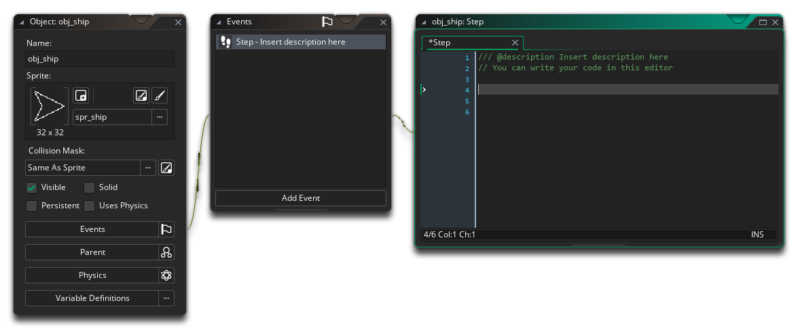
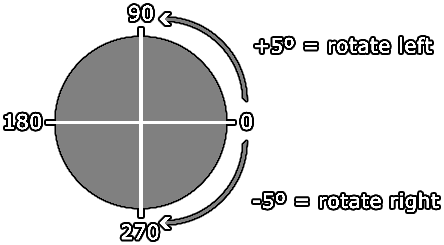

When programming, everything can be broken down to a fairly simply rule:
if this then that
So, all a program does is check if this happens, and if it does then that happens - like, "if a key is pressed then the player will move". Put into a more GameMaker Studio 2 friendly format it would be expressed as
if event then act
Which means that if an event is triggered, then a specific action must be performed. An event is simply a moment in time when something happens, and some events can be triggered once (like the Global Mouse Left Down event) or can be triggered every game frame (like the Step Event). Let's look at how to use these events to make our ship perform an action, in this case, move.
You'll need to open the object "obj_ship" (if it's not already open) by double clicking  it in the resource tree. When open, you can then click
it in the resource tree. When open, you can then click  on the Add Event to bring up the Event List:
on the Add Event to bring up the Event List:

There are two ways that we can check if the player is moving:
- Use the discreet Keyboard Events, which will only be triggered when a key press is detected, or
- Use the Step Event and check using code for a keypress every step (game frame)
What you use in your projects is largely a matter of choice and will depend on how you like to work and the structure of your project. In this case, we are going to use the Step Event, as it can sometimes be clearer to see the game logic where it's all together, so go ahead and add a Step Event now.

We're going to add some code here, and it will be run 60 times every second. Why? Because we set the game speed to be 60, which means that there will be 60 game frames ("steps") for every second that passes, and since the Step Event is triggered every game frame, any code we add into this event will be run 60 times each second too.
The basic interpretation of what we want to do first would be "if the left key is pressed, rotate the ship to the left". To get this into code we need to structure it like this:
if (expression)
{
<statement>
<statement>
<statement>
}
So, we have our "if" at the start and we'll be checking whatever expression goes inside the parenthesis () to see if it evaluates to a true or a false result. So something like "if (my_variable == 1)" checks to see if a variable is exactly equal to 1 and if that is true then it will go on to perform the code that you have in the {}.
Let's add the actual code into the Step Event of the "obj_ship" now:
if (keyboard_check(vk_left))
{
image_angle = image_angle + 5;
}
Here we check the function keyboard_check() to see if the left arrow key is being held down, and if it is (the function will return true if it is or false if it's not) then we add 5 to the image_angle of the instance. The image_angle variable governs the angle at which the assigned sprite will be drawn. Note that at the end of each statement we add a semi-colon ;, which is the code equivalent of the full-stop at the end of a sentence.
Why are we adding 5 if we are turning left? That's because angles in GameMaker Studio 2 go anti-clockwise with 0° being to the right:

This is why we made our ship sprite facing right - it makes setting the angles when rotating much easier!
We can use almost the exact same code for turning the ship to the right, so copy the lines of code for the left key (you can select the lines and then use  /
/  + "D" to duplicate them) and then make the following changes:
+ "D" to duplicate them) and then make the following changes:
if (keyboard_check(vk_right))
{
image_angle = image_angle - 5;
}
You can press the Play button now, and if you press the left/right arrow keys you should see your ship instance rotating.
We are now ready to make the player ship move! Click "Next" to continue...